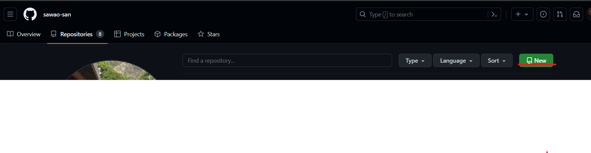
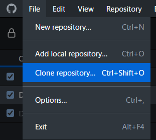
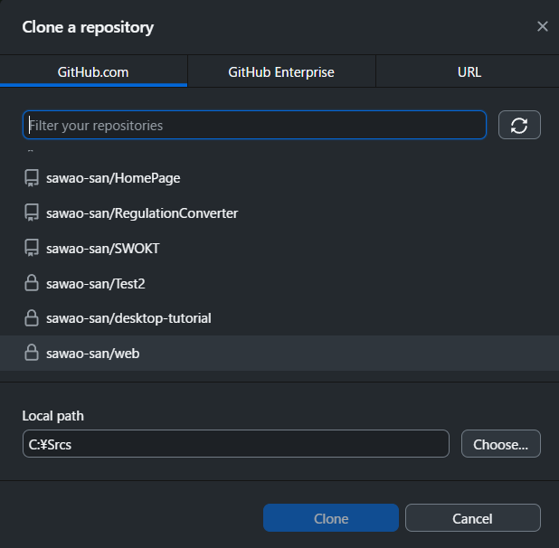
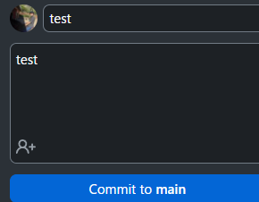

以下のようなRepojitoriesのページでNewボタンをクリックすることで、グローバルリポジトリが作成できる
github Desktopアプリを使用して行う場合、 以下のようにメニューバーからFile->Clone Repository...をクリックする 
表示されるダイアログ上で、先ほど作成したGitHub上のリポジトリを選択し、ローカルリポジトリのフォルダを作成する 
ファイルを追加して、 github Desktopアプリを使用しているなら 画面左下からCommitするだけ 